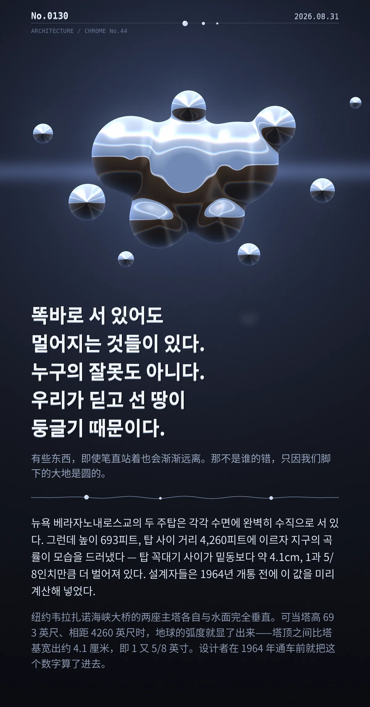

똑바로 서 있어도 멀어지는 것들이 있다. 누구의 잘못도 아니다. 우리가 딛고 선 땅이 둥글기 때문이다.（有些东西，即使笔直站着也会渐渐远离。那不是谁的错，只因我们脚下的大地是圆的。）
뉴욕 베라자노내로스교의 두 주탑은 각각 수면에 완벽히 수직으로 서 있다. 그런데 높이 693피트, 탑 사이 거리 4,260피트에 이르자 지구의 곡률이 모습을 드러냈다 — 탑 꼭대기 사이가 밑동보다 약 4.1cm, 1과 5/8인치만큼 더 벌어져 있다. 설계자들은 1964년 개통 전에 이 값을 미리 계산해 넣었다.
冷知识由执笔的模型自行查证。逐条断言、来源与所引原句存档在纯文字副本里，未经程序逐字校验，留作事后核实。